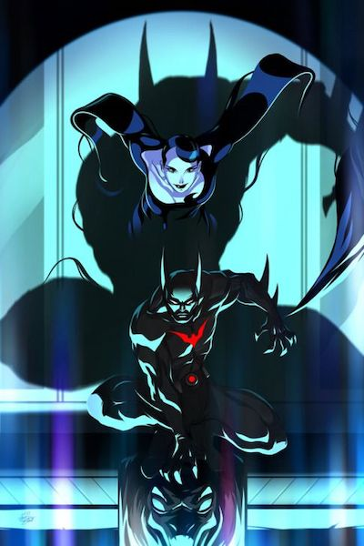

Nascido em 18 de Agosto de 2023, filho de um grande cientista e de uma famosa astrônoma, Terry sempre foi conhecido por ser um garoto bem difÃcil. Com apenas 14 anos de idade, o rapaz foi pego roubando uma pequena loja e, para além disso, ele sempre se envolveu com gangues, muito por culpa da influência do seu amigo Charlie Bigelow. Mas a sua experiência no mundo do crime teve uma duração muito curta.

Terry não era um garoto fácil
Carregar o legado de Bruce Wayne não é tarefa fácil, mas felizmente para os fãs do Cavaleiro das Trevas, Terry McGinnis demonstrou ser capaz de vestir a capa negra mais famosa dos quadrinhos.
Treinado e coordenado pelo experiente Bruce, Terry se transformou no Cavaleiro do Amanhã!
Seu primeiro contato com Bruce Wayne
Numa noite, Terry estava fugindo de uma gangue chamada "Coringaz", até que foi encurralado próximo da Mansão Wayne. Para sua surpresa, um idoso Bruce Wayne surge em seu auxÃlio e juntos conseguem derrotar os bandidos.
Infelizmente, o coração frágil do velho Bruce não aguentou tanta adrenalina e Terry teve que o socorrer, levando-o para dentro da mansão, e ajudando a encontrar a medicação do milionário mais famoso de Gotham.


{kind=link}

A tragédia invade a vida de Terry
Após ter sido expulso por Bruce Wayne da sua mansão, Terry foi para casa e encontrou um cenário desolador. O pai de Terry tinha sido assassinado pelos "Coringaz", inicialmente o jovem pensou que tinha sido um ato de vingança, contudo existia algo mais.
O pai de Terry era cientista e estava desenvolvendo uma espécie de arma biológica para o dono da empresa da qual trabalhava, Derek Powers.
Sem saber o que fazer, Terry acaba voltando à BatCaverna e roubando o uniforme mais moderno, com a missão de se vingar da morte do seu pai.

Terry descobre que Bruce era o Batman
O Batman já não aparecia há alguns anos, mas foi nessa mesma noite que Terry ficou conhecendo a verdade sobre o Cavaleiro das Trevas. Logo após Bruce ter tomado a sua medicação para o coração ele acabou adormecendo.
Terry ficou sozinho na Mansão e, ao passar por um dos corredores, encontrou um morcego preso dentro de um relógio, quando ele foi tentar libertar o animal, uma porta secreta se abriu. O jovem entrou pela porta e encontrou a BatCaverna, descobrindo que Bruce era o Batman!

O nascimento do Batman do Futuro
Apesar de Bruce não ter ficado de boa com o roubo do uniforme, ele entendeu que ainda era necessária a existência de um Batman em Gotham, e decide contratar Terry como o seu assistente. Com o treino e coordenação do Bruce, Terry acaba derrotando Derek Powers.
Apesar de ter conseguido a sua vingança, ele sentiu a necessidade de fazer algo pela cidade, como forma de compensar todos os erros que tinha feito do passado. E é desta forma que nasce o Batman do Futuro!
Terry e Bruce estiveram envolvidos em muitas missões e aventuras, contudo Bruce sempre se mostrou relutante em admitir que Terry era um bom herdeiro. Apesar disso, o Batman do Futuro foi capaz de alguns feitos bem incrÃveis, salvando inclusive a vida do Superman.